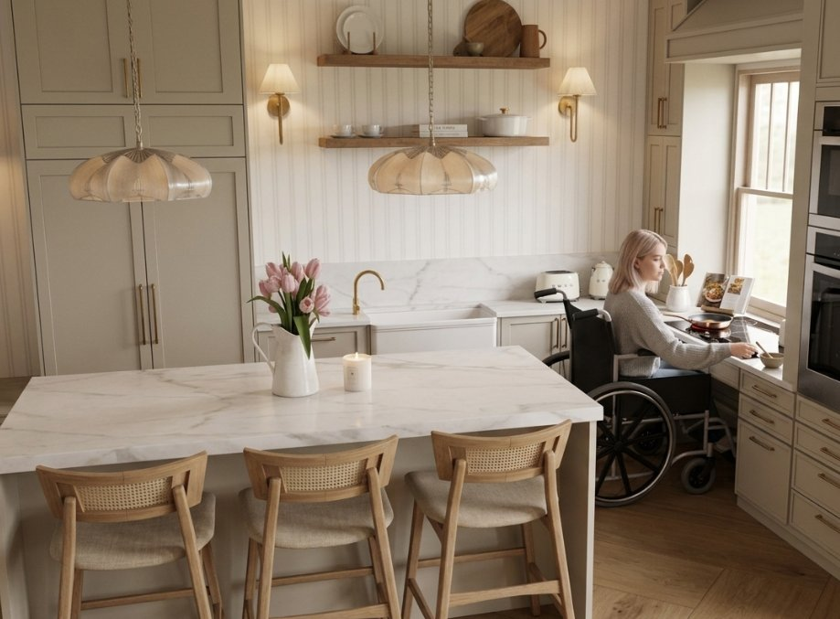
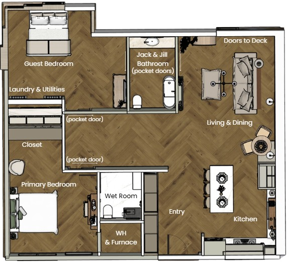
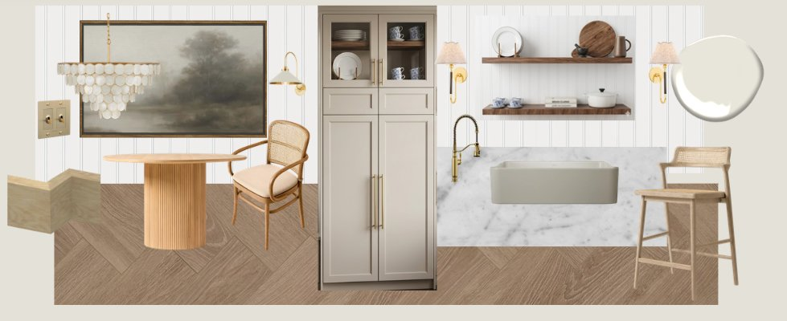
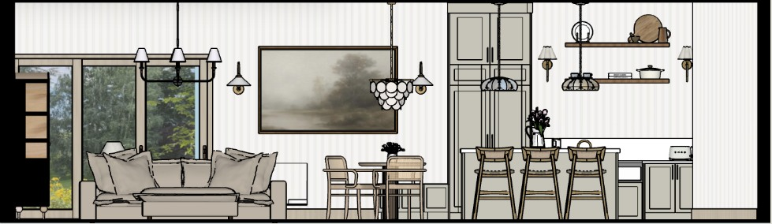
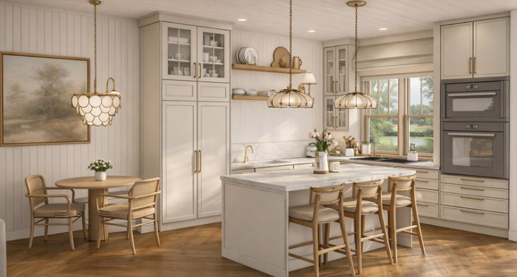
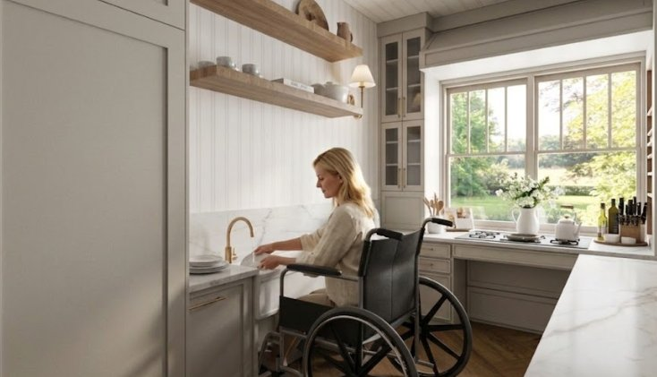
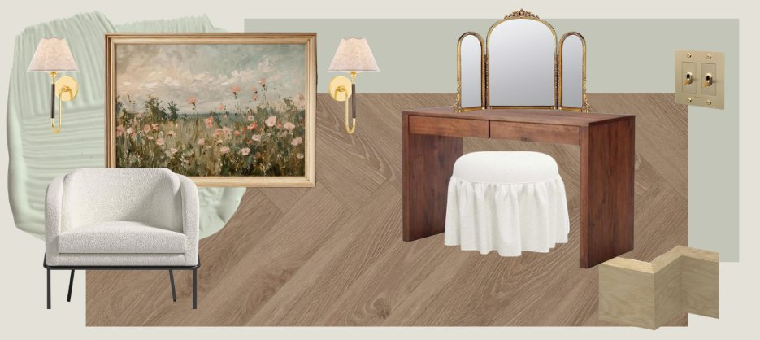
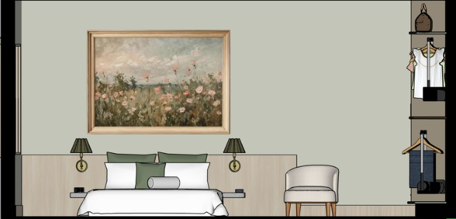
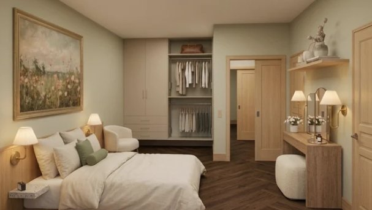
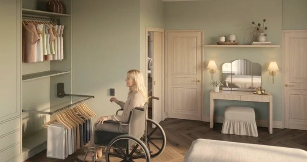

Project 03 · Cosmos
Lucy’s Cottage
Accessible Living, Thoughtfully Designed
- Type
- Interdisciplinary Group Project · Accessible Residential Renovation Concept
- Course
- INDE3007 – Practicing Interdisciplinary
- Date
- Design Team
- Avery Hearder & Addison Ross
- Consulted
- Occupational Therapy Students
- My Role
- Project Planning, Space Planning, 3D Modelling, Rendering & Presentation Development

Overview
Lucy’s Cottage is an interdisciplinary group project designed for Lucy, a 36-year-old living with multiple sclerosis (MS). With her changing mobility and energy needs in mind, we developed a barrier-free, single-level cottage renovation focused on dignity, independence and adaptability: a home that supports everyday routines while maintaining the warmth and comfort of Muskoka lake living. Informed by meetings with students from the Occupational Therapy program, the design brings together accessible circulation, adaptable furnishings and thoughtful accessibility details.
Design approach
The design balances functionality and residential comfort through accessible kitchen planning, thoughtful circulation, technical development, and calming natural materials.
Spatial planning

Kitchen design




Bedroom design




My contribution
Designed by Avery Hearder and Addison Ross, with insight from the Occupational Therapy students we consulted. My role included project planning, space planning, 3D modelling, rendering, and presentation development.
Looking Back
Working on Lucy’s Cottage taught us how important it is to think beyond someone’s current needs. Our goal was to create a home that supported Lucy’s independence and dignity while still feeling like a warm Muskoka cottage. Meeting with occupational therapy students helped us consider practical details we might not have thought of, such as adaptable cabinetry, accessible appliances, and adding backing inside walls so grab bars could be installed more easily in the future.
One of our biggest takeaways was that accessibility should be considered from the beginning, rather than added later. We wanted these features to feel like a natural part of the home, not something that made it feel clinical. Looking back, we’d love to explore the design further with people who use mobility aids to better understand how the spaces would work in everyday life.